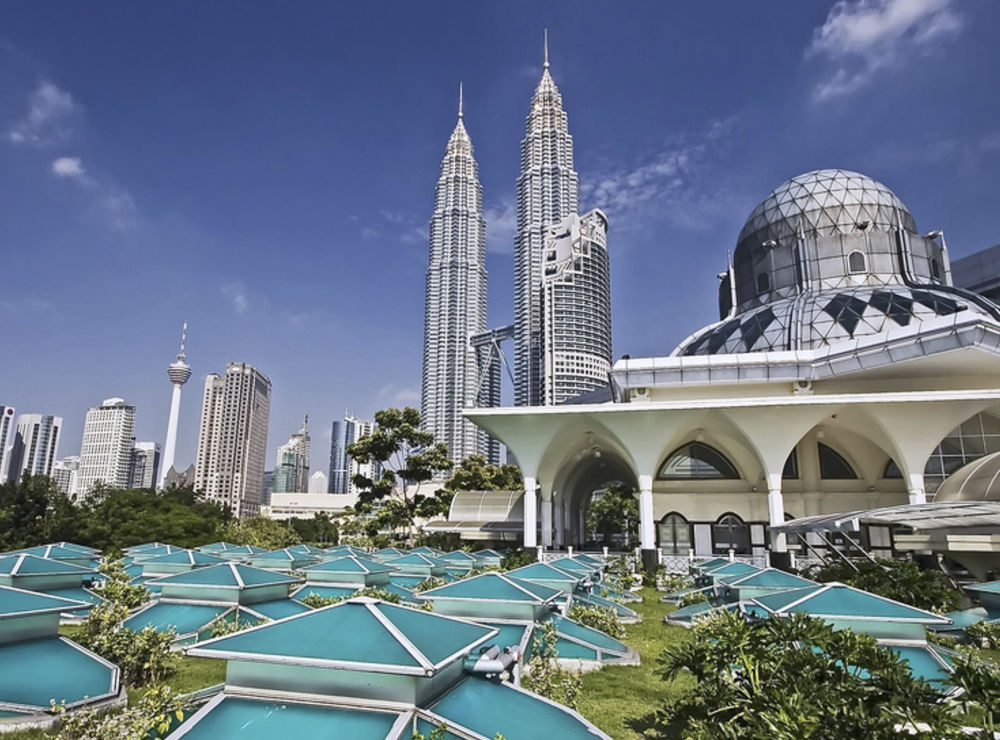

Go Back Packing
T ravelling enriches our minds and spirits and refreshes our moral values. You may find many places that may give you the best experience or fulfill many of your desires.
Website created by Nicole and Maya.
T ravelling enriches our minds and spirits and refreshes our moral values. You may find many places that may give you the best experience or fulfill many of your desires.
Website created by Nicole and Maya.
1. London, England Although it has astronomical living costs, the city is the most popular destination for many travelers. Classic plays, musicals, and poetry flourish in this city. One advantage of London’s galleries and museums is that most of them are free.
2. Bangkok, Thailand With more than 18 million foreign visitors in 2015, it is the second most visited city in the world. It has dynamic shopping centers and nightlife. Buddhist temple is one of the most notable places in the city. Many cultural festivals attract many visitors to the Asian city. Moreover, Bangkok is the most popular destination when it comes to medical tourism.
3. Paris, France The city of love is one of the top most famous cities in the world. Accessibility to the city is easy as the country borders eight nations. Paris attracts about 16 million people in a year. It is the best destination for fashion lovers, business people, and entertainment seekers. Another important event thing in Paris is The Tour de France bicycle race. It attracts many competitors and is the most loved bicycle-racing event.
4. Dubai, United Arab Emirates UAE most populous city garnered 14 million visitors in 2015. It has become a beautiful city through its unique architecture such as having the tallest skyscraper. It hosts any sports events such as car racing. It is a luxurious and pricey vacation place where wealthy people from around the world visit.
5. Istanbul, Turkey With over 12.5 million visitors the past year, it is among Europe top visited cities. The city has an excellent history of Modern civilization since the time of the ancient Macedonians and Spartans. It is Europes fastest growing destination. It’s named Europeans cultural city. Also, the entertainment and nightlife of the city are much vibrant.
6. New York City, United States America commercial city remains the largest town in the country when it comes to traveling. With over 12.3 visitors in 2015, it stands among the most favorite cities in the world. Attractive sites The Empire State Building, The Statue of Liberty and events such as the Fashion Week. As America largest city, it may continue being the most visited soon.
7. Singapore City, Singapore It has nearly 12 million visitors annually. It has a reputation for being an expensive city that has high-end hotels. With legalized gambling, it has increased casino tourism. Its cuisine is seen to be its biggest draw. Many people come to see the culturally fused architecture in the city.
8. Kuala Lumpur, Malaysia  Malaysia capital attracts about 11 million visitors as per last year visits. Shopping and tourism are the primary drivers of the Asian country economy. Some of the major tourist attractions are Petronas Towers, The National Place, The Jamek Mosque and Kuala Lumpur Chinatown. Cultural festivals such as the Hindu’s Thaipusam attract many visitors who add to the numbers of travelers destined for the city.
9. Seoul, South Korea The city is the financial, political and cultural center of South Korea. With more than 10 million visitors in 2015, Seoul has proved to be a growing tourist attraction. The city backs to the 14th century when it became a capital. Two old residential districts are museums for cultural displaying to improve tourism.
10. Hong Kong, China The city has developed to be one of the most famous metropolises in the world. Hong Kong has a major entertainment industry. It produces many kung-fu action films that are popular around the world. The city has about 8.5 million visitors annually, making it among the most popular travel destinations. Hong Kong has an achievement of having the highest number of skyscrapers than any other town in the world.
Other sites for more information:
https://www.visitmalta.com/en/practical-info https://travelfree.info/ https://www.forbes.com/sites/bishopjordan/2018/04/02/top-ten-travel-destinations-on-the-rise-2018/#746e602e73ae